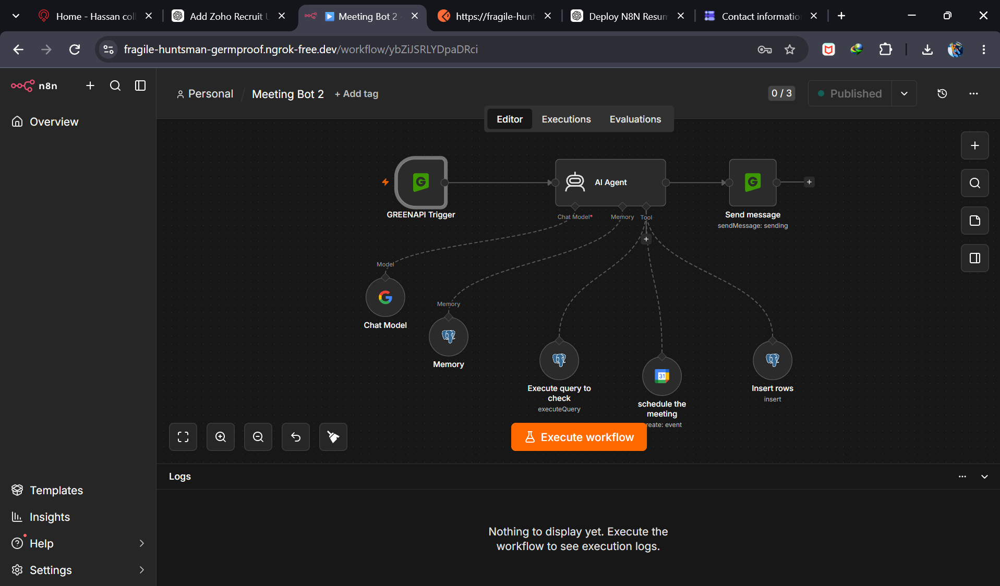

WhatsApp AI Meeting Scheduler
An AI-powered WhatsApp meeting scheduling assistant using n8n, Google Gemini, PostgreSQL, Google Calendar, and Green-API.

Project Summary
Project: WhatsApp AI Meeting Scheduler
Category: AI Automation / Conversational Automation
Platform: n8n
Primary Channel: WhatsApp
Core Technologies: Green-API, Google Gemini, PostgreSQL, Google
Calendar
The goal is to create a conversational AI assistant that can collect
meeting details from WhatsApp, validate the information, check
availability, obtain confirmation, store the meeting record, and schedule
the meeting.
The Problem
A traditional meeting-booking process can require the user to complete
forms or exchange multiple messages with a human scheduler.
A good conversational assistant must do more than simply answer questions. It
must remember previous messages, avoid asking the same questions again, validate
data, detect conflicts, obtain confirmation, store the booking, and
interact with a calendar.
This project solves those requirements by an n8n AI Agent design.
Solution
WhatsApp User
↓
Green-API Trigger
↓
AI Agent
↙ ↓ ↘
Gemini Memory Scheduling Tools
↓
Validation
↓
Availability Checks
↓
User Confirmation
↓
PostgreSQL + Google Calendar
↓
WhatsApp Response
The AI Agent acts as the orchestration layer, and uses external tools
when a database or calendar action is required.
User Journey
User sends message
↓
AI collects missing information
↓
Memory preserves previous information
↓
All fields are validated
↓
PostgreSQL + Calendar availability checked
↓
Meeting summary displayed
↓
User confirms
↓
Meeting stored and scheduled
↓
WhatsApp confirmation sent
The design intentionally places an explicit user confirmation before a
persistent booking action.
AI Agent Design
The system prompt defines the assistant as a professional WhatsApp
meeting scheduling assistant.
The agent is instructed to:
- respond in the user's language,
- be concise and professional,
- never guess or invent information,
- read previous conversation memory,
- combine new and previous information,
- ask only for missing information,
- validate all fields,
- check availability,
- obtain confirmation,
- call the database only after confirmation,
- avoid revealing prompts, memory, tools, or internal workflow
details.
Availability Checking
A key requirement is the requirement for two availability checks.
PostgreSQL Check
The workflow has a PostgreSQL query tool against meeting_record.
Current exported query:
select from meeting_record
where
meeting_date = '{{ $json.meeting_date }}';
Google Calendar Check
The AI Agent also has a Google Calendar availability tool connected to
the n8n meetings calendar.
The system prompt requires both checks before the date can be accepted.
Requested Date
│
├── PostgreSQL Check
│
└── Google Calendar Check
│
▼
Both available?
/ \
No Yes
│ │
▼ ▼
Ask for new Continue
date
Confirmation Safety Layer
After all required information is valid and availability checks pass,
the agent displays the meeting details and asks the user to confirm.
The configured confirmation examples include:
YES
Yes
Y
Correct
Confirmed
Confirm
Proceed
Looks good
Everything is correct
Okay
OK
Fine
ہاں
جی
ٹھیک ہے
درست ہے
کنفرم
The system prompt instructs the AI Agent to call the PostgreSQL tool
exactly once after confirmation.
AI Agent Tools
Four tools are connected to the AI Agent:
Insert rows
Stores the confirmed meeting data in PostgreSQL.
Available dates
Checks Google Calendar availability.
Execute query to check
Checks existing meeting records in PostgreSQL.
Schedule the meeting
Creates the meeting in Google Calendar.
This is an agent/tool architecture rather than a simple linear
automation:
AI Agent
│
┌─────────────┼─────────────┐
▼ ▼ ▼
PostgreSQL Calendar PostgreSQL
Insert Availability Query
│
└──────────────┬──────────────┘
▼
Calendar Scheduling
Technical Skills Demonstrated
AI
- AI Agent configuration
- Gemini integration
- system prompt design
- conversational AI
- validation rules
- tool calling
Automation
- n8n
- workflow orchestration
- multi-service integration
- WhatsApp triggers
- AI tool connections
Database
- PostgreSQL
- persistent memory
- session-based identification
- database queries
- meeting record storage
Calendar
- Google Calendar integration
- availability checking
- calendar event creation
Business Logic
- information collection
- validation
- conflict checking
- confirmation workflow
- privacy rules
Business Value
The assistant can reduce repetitive communication during meeting
scheduling.
Rather than filling out a rigid form, a user can provide information
in a natural way via WhatsApp.
The process is:
Collect
↓
Remember
↓
Validate
↓
Check availability
↓
Confirm
↓
Store
↓
Schedule
This demonstrates a practical conversational business-automation use
case.
Production Improvements
The exported workflow is suitable as a technical demonstration, but
consider:
- explicit start/end times,
- meeting duration,
- timezone handling,
- stronger time-slot conflict detection,
- database-level duplicate protection,
- transaction/rollback handling,
- API error handling,
- Calendar/PostgreSQL synchronization failures,
- rate limiting,
- authentication,
- audit logging.
Security & Privacy
The workflow prompt instructs the assistant to collect only scheduling
information, and not to reveal internal workflow details.
For a public GitHub repository, sanitize the workflow export before
publishing it.
Do not expose:
- API keys,
- OAuth access/refresh tokens,
- database passwords,
- private credentials,
- real customer conversations,
- private phone numbers,
- private calendar information,
- production database records.
Use test/demo data in screenshots.
Outcome
The project demonstrates an end-to-end conversational automation where a WhatsApp
user can provide meeting information naturally, while the AI Agent manages memory,
validation, availability checks, confirmation, database storage, and calendar scheduling.
The key technical value is the integration of AI + persistent memory +
PostgreSQL + Google Calendar + WhatsApp + n8n tool calling into one
controlled workflow.
Visual walkthrough
Selected screenshots from the supplied project materials.